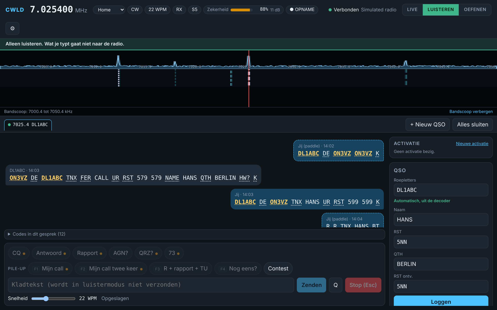

Lees CW zoals je het hoort.
CWLD decodeert Morse met een waarschijnlijkheidsdecoder die toont hoe zeker hij is, zendt met je toetsenbord of met één klik, houdt je logboek bij en laat je oefenen met gesimuleerde stations. Gratis, open source, gemaakt door een radioamateur.
Een station in één venster
Alles voor een CW-QSO, een contest of een park-activatie, terwijl de radio blijft doen waar hij goed in is.
Een decoder die zegt hoe zeker hij is
In plaats van stil te gokken houdt CWLD meerdere lezingen bij en toont twijfel. Zwakke of rommelige signalen verdwijnen niet achter zelfzekere foute letters.
Zenden met het toetsenbord
Typ, of klik op een kant-en-klaar antwoord. Esc stopt meteen. Je paddle op de radio blijft altijd werken.
Een gesprek, geen tekstmuur
Elk station is een gesprek. Klik op een roepletter om ze in het QSO-paneel te zetten, klik op een chip om te antwoorden.
Logboek en ADIF
Contest-invoerlijn met F-toetsen zoals N1MM, dupes, tempo, en een ADIF-export met controles voor het bestand vertrekt.
Thuis en portable
Stationsprofielen en activaties voor WWFF, POTA en SOTA, met grid, vermogen en referentie in elk QSO.
Oefenen met gesimuleerde stations
Beantwoord een CQ, draai een pile-up of speel een contest. Er wordt nooit iets uitgezonden.
Gemaakt om in één blik te lezen
Een smalle waterfall, grote leesbare tekst, één kleur voor roepletters. Donker en licht thema, Nederlands en Engels zonder herstart, en een korte uitleg bij elke instelling.
- Klik op een roepletter om een QSO te starten
- Chips met {CALL}, {MYCALL}, {NAME}, {RST}, {QTH}
- Live frequentie, band, modus en S-meter van de radio
- CWLD zendt nooit uit zichzelf

Je weet altijd of je kunt zenden
LIVE
De enige modus die zendt. Altijd in het rood.
LISTEN
Alleen ontvangen en decoderen. Veilig om te luisteren en te testen.
PRACTICE
Gesimuleerde stations in je koptelefoon. Er verlaat niets je computer.
Hoe klinkt jouw naam?
Typ een woord en speel het af als Morse. Dit draait in je browser en stuurt nergens iets naartoe.
Haal de laatste versie
Download het Windows-installatieprogramma
- Bestand
- Grootte
- Uitgebracht
- SHA-256
De laatste versie kon niet worden opgezocht. Open dan de release-pagina: GitHub Releases
Systeemeisen
- WindowsWindows 10 of 11, 64-bit
- RadioIC-7300 MK II of QRP Labs QMX, met een USB-kabel
- LinuxGepland, nog niet uitgebracht
- macOSStaat op de roadmap
- PrivacyGeen account. Alleen de downloadknop vraagt GitHub om de laatste versie.
Eerst Morse leren?
De CWLD-morsetrainer is een gratis webapp van dezelfde maker: leer de tekens, bouw snelheid op en oefen met opschrijven.